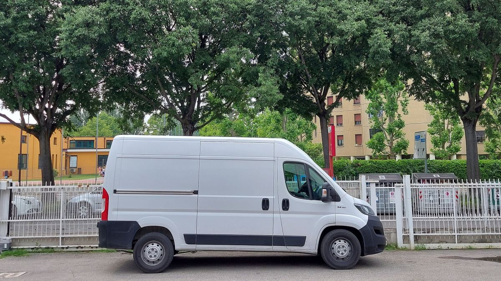
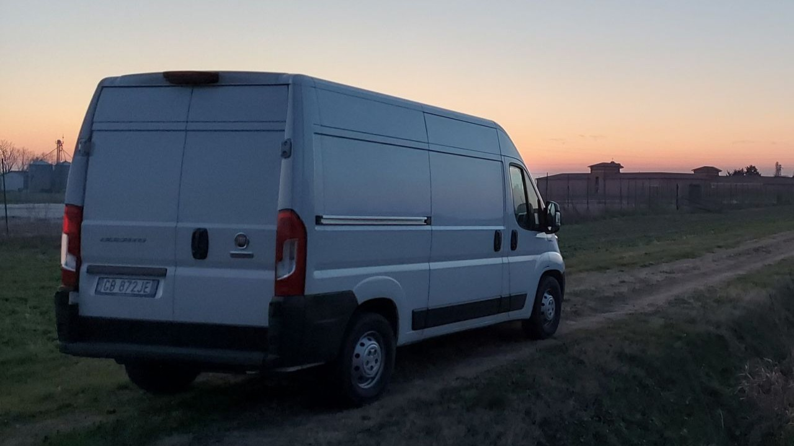
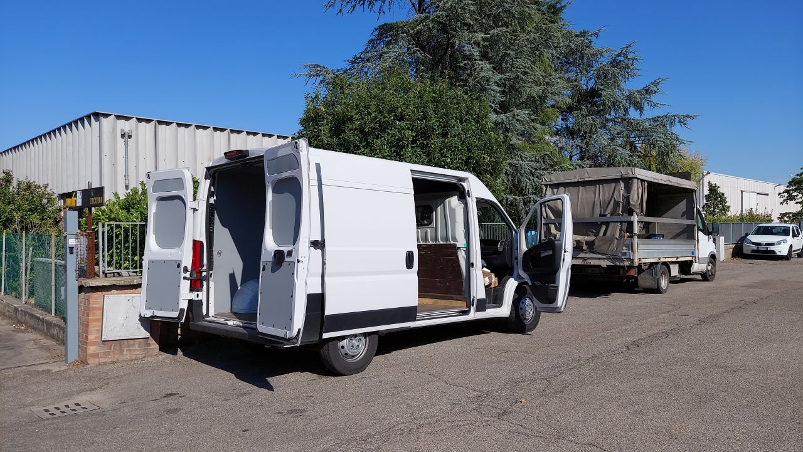

La Divisione Trasporti di EMME A nasce da un legame autentico e profondo con il mondo dei trasporti. Il fondatore, Stefano Stella, ha lavorato per decenni come autotrasportatore “padroncino”, maturando una conoscenza diretta delle esigenze e delle sfide quotidiane del settore. Questa esperienza concreta rappresenta ancora oggi il cuore della nostra divisione trasporti, orientata a un servizio che unisce competenza, affidabilità e attenzione ai dettagli.
Oggi EMME A offre servizi di trasporto conto terzi su tutto il territorio nazionale, specializzandosi nei trasporti sotto le 3,5 tonnellate. Questa scelta consente di garantire non solo rapidità e flessibilità, ma anche un importante vantaggio operativo: i nostri mezzi non sono soggetti ai blocchi di circolazione previsti per i veicoli pesanti e possono accedere a centri cittadini, aree industriali e spazi logistici che un camion tradizionale non riuscirebbe a raggiungere. In questo modo, le aziende clienti possono contare su consegne puntuali e senza ostacoli, anche nei contesti più complessi.
La differenza rispetto a un corriere tradizionale è nella qualità del servizio: non semplici consegne standardizzate, ma viaggi costruiti su misura. Dalla programmazione dei tempi di ritiro e consegna, alla cura delle merci in ogni fase del trasporto, fino alla precisione nelle operazioni di carico e scarico, ogni passaggio è gestito con attenzione e responsabilità.
